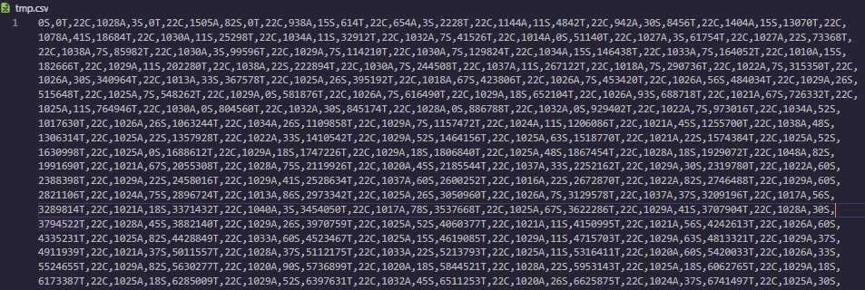

Meeting The brief
Here I will talk about how I met the brief
UI
- Navigation: Make it easy for users to find what they need.
- Readable Text: Use readable fonts and appropriate font sizes.
- Visual Hierarchy: Highlight important elements for easy scanning.
- Clear and Concise Content: Communicate information clearly.
- Consistent Design: Maintain a consistent design across pages.
CSV Files:
Study Tracker
I linked my study tracker to the theme of wellbeing as ineffective study can lead to increased stress levels which can be very bad for mental wellbeing. Increased stress can lead to higher risk of developing cardiac issues and my Artefact aims to prevent this.